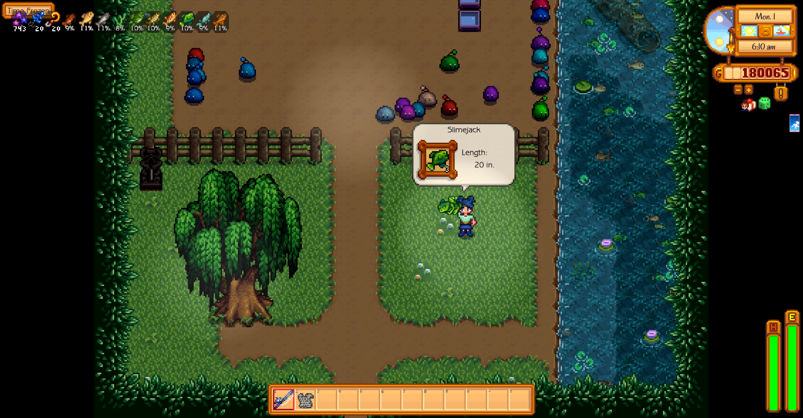
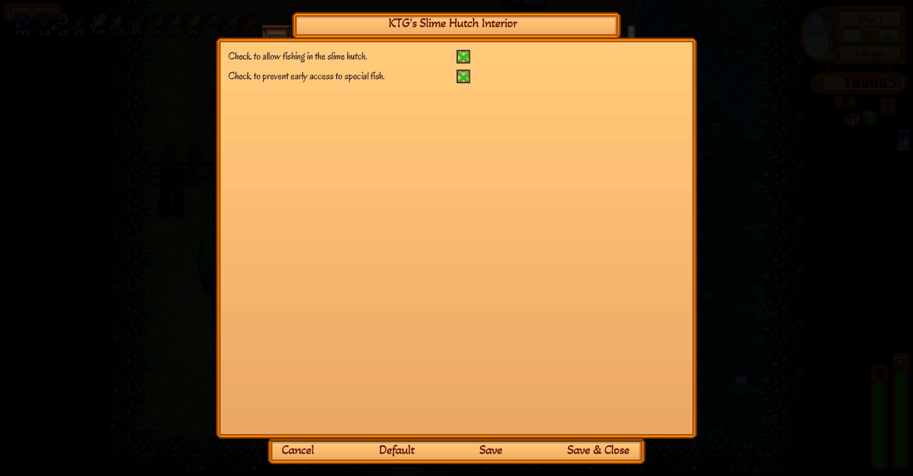

I got bored with the regular slime hutch interior, and going in there feels like a chore to me, so I made this to make the interior more fun.
This map provides more room in the Slime Hutch, an auto-fenced area where you can corral your slimes, and fishing that matches the town and the mountain area fishing, plus Slimejacks and Midnight Carp felt appropriate.

You must have Content Patcher v 2.7 or later installed for this map to properly load. This is a content pack for Content Patcher.
SMAPI will generate a config file that looks like the below. I suggest using GMCM to allow managing the options in game.
{
"EnableFishing": "true",
"NoSpoilers": "true"
}
EnableFishing can take either true or false values. True lets you fish in the stream inside the Slime Hutch. False disables fishing in the Slime Hutch.
EnableFishing has to be set to true for the NoSpoilers option to have any affect. It, likewise, takes either true or false values, and when true limits fishing to just the fish that are can be fished up in the Town or the Mountain map until the current player visits the map where Slime Jacks spawn. When false and EnableFishing is true, Slime Jacks can be fished up at all times, and Midnight Carp can be caught even in Spring or Summer, though still only between 10 PM and 2 AM.


This mod only changes the interior layout map of the Slime Hutch, which does involve an update to Data/Buildings/Slime Hutch to get the Slime Incubator to spawn in a different location. It uses base game assets, so if you're using a recolor mod like Vibrant Pastoral Redrawn those changes will affect the look of this map.
This mod will conflict with any other mod that replaces the Slime Hutch interior.

The only thing to translate is the GMCM config menu.
| Language | File | Thank You, |
|---|---|---|
| English | default.json | KasualTheGamer |
| Chinese (Simplified) | zh.json | Google Translate |
| French | fr.json | Google Translate |
| German | de.json | Google Translate |
| Hungarian | hu.json | Google Translate |
| Italian | it.json | Google Translate |
| Japanese | ja.json | Google Translate |
| Korean | ko.json | Google Translate |
| Portuguese | pt.json | Google Translate |
| Russian | ru.json | Google Translate |
| Spanish | es.json | Google Translate |
| Turkish | tr.json | Google Translate |
A quirk is something that isn't going to get changed any time soon, and doesn't break the game.
These would be problems I'm actively working to fix.

A big thanks to bblueberry on the SDV Discord modders chat for help getting the fishing to work, and to Selph (same venue) for help figuring out how to get the slime incubator to load properly!


Beta versions of this mod will be on GitHub.
If you think you can do better than me, you're probably right. I did not create any image assets for this mod (just arranged the vanilla tiles on a new map), so there's nothing for me to get flaffed over someone using. Have fun, and send me a link to what you make, please.